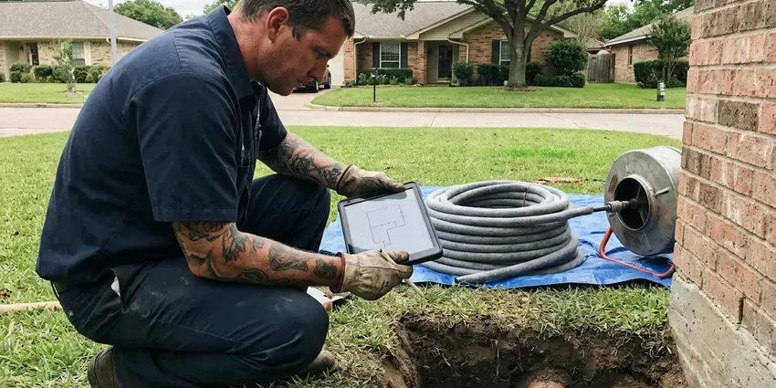

Water Leak Repair in New Haven, CT
Experiencing a water leak in New Haven, CT? GLV Plumbing offers fast, expert leak detection and repair services to protect your home.
- Licensed & Insured
- Prevent Costly Damage
- Lasting Pipe Repair
- Foundation Safeguarding
Reliable Water Leak Solutions in New Haven, CT.
Contact GLV Plumbing today for fast and professional service that restores your peace of mind and prevents extensive water damage.
Water Leak Repair in New Haven, CT for Walls, Slabs, Ceilings and Yard Lines
At GLV Plumbing, we provide professional water leak repair, addressing everything from visible drips to hidden issues that can cause serious damage. Our experienced plumbers in New Haven, CT are trained to identify the root cause of the leak, whether it's faulty plumbing, corrosion, or pressure issues, delivering a durable repair that meets local codes.
Our expertise includes:
- PEX, Copper, PVC Pipe Service
- Precise Electronic Leak Detection
- Acoustic ground microphones and thermal imaging for hidden leaks

Additional Plumbing Repair Services in New Haven, CT
We offer expert plumbing repair services across New Haven, CT to stop leaks, clear blockages, and keep every fixture working the way it should.


Customers
Why Choose GLV Plumbing for Water Leak Repair in New Haven, CT?
When you have a water leak, fast action is essential to prevent costly water damage and mold growth. Our team is committed to providing prompt and effective solutions.
- Local Expertise, Our plumbers are familiar with the diverse housing types and common plumbing issues in New Haven, ensuring tailored solutions.
- Lasting Repairs, We use durable, code-compliant materials and techniques to ensure your water leak repair stands the test of time.
- Skilled Technicians, Our plumbers are well trained and experienced in diagnosing and repairing all types of water leaks, using modern tools.
Citywide Coverage
From downtown New Haven to the surrounding suburbs, our service vehicles are always ready to respond to your water leak emergencies. We are committed to providing prompt and efficient service across the entire New Haven area.
Experienced Team
Each plumber on the leak team has years of repair experience with copper, PEX and older piping materials. They know how to make lasting repairs in tight spaces with little disruption.
Safety-First Approach
When leaks have soaked drywall or insulation, we point out mold risk and drying needs. We also shut off and restore water slowly to avoid pressure surges that cause new leaks.
Trusted Certified New Haven Plumbing Services Professionals
At GLV Plumbing, we take pride in providing licensed, certified plumbing services throughout New Haven, CT. Backed by recognized industry credentials, our experienced plumbers combine technical skill with genuine customer care. Whether it is repair, installation, or maintenance, we follow strict safety and quality standards to deliver long-lasting results you can trust.
Call Us Now PHCC Plumbing Contractor Recognition
PHCC Plumbing Contractor Recognition Better Business Bureau (BBB) Accreditation
Better Business Bureau (BBB) Accreditation Angi Certified Pro
Angi Certified Pro ISO 9001 Quality Management Certification
ISO 9001 Quality Management CertificationReliable Water Leak Repair Services in New Haven, CT
Slab Leak Detection & Repair in New Haven
Slab leaks are common where soil shifts and puts stress on pipes embedded in concrete foundations. High water tables in low-lying areas of Connecticut can push groundwater into basements during wet seasons and overwork sump pumps. We use non-invasive acoustic and thermal imaging equipment to pinpoint the exact location of the leak beneath your home's foundation in New Haven. Our repair options range from targeted slab penetration to re-routing the affected line, minimizing disruption and protecting your foundation from further damage. We work with all types of piping found in slab foundations, including copper and PEX, delivering a durable fix that complies with local building codes.

Copper Pinhole Leak Repair in New Haven
Copper pipes in some homes develop pinhole leaks from water chemistry, high velocity or poor original installation. A large share of homes in Connecticut use private wells, which can be acidic or carry iron, manganese, or radon that require treatment. One pinhole often signals others nearby. We replace the damaged section with new copper or PEX and inspect the surrounding piping. If pinholes keep showing up, we discuss a partial or full repiping.
In-Wall Leak Repair in New Haven, CT
Leaks inside walls show up as bubbling paint, soft drywall, baseboard stains or a musty smell. We use moisture meters and thermal imaging to find the wet area and the leaking pipe. Repairs usually involve replacing a pinholed copper section or a failed PEX fitting. We cut a clean access opening that is easy to patch.
Emergency Water Leak Repair in New Haven, CT
A burst pipe or sudden, significant leak requires immediate attention to prevent extensive water damage. GLV Plumbing offers emergency water leak repair services across New Haven, CT. Our rapid response team is available to quickly shut off water, assess the damage, and perform urgent repairs. We understand the stress these situations cause and prioritize getting your plumbing back in order with minimal downtime, even outside regular business hours. Call us right away for any critical water leak issue.
Commercial Water Leak Services in New Haven
Water leaks in commercial properties in New Haven can disrupt business operations, lead to costly downtime, and create unsafe conditions. GLV Plumbing provides dedicated commercial water leak detection and repair services for businesses, offices, and industrial facilities. Our plumbers are equipped to handle larger-scale plumbing systems, complex pipe networks, and high-pressure lines. We work efficiently to minimize impact on your business, ensuring compliance with commercial building codes and industry standards while protecting your assets from water damage.
Pipe Burst Repair in New Haven, CT
A burst pipe can cause extensive water damage very fast, especially during sudden drops in temperature. Outdoor faucets should be shut off from inside and drained each fall, and frost-free hose bibs are a worthwhile upgrade. We respond rapidly to emergencies, isolating the leak and performing immediate repairs using durable materials like PEX or copper. Our team is equipped to handle pipe bursts in walls, ceilings, and under floors, ensuring all affected areas are addressed and potential mold risks are reduced. We also advise on insulation improvements to prevent future freezing.
Underground Water Line Repair in New Haven, CT
Leaks in underground water lines can be challenging to detect and repair, often signaled by sudden drops in water pressure or unusually wet spots in your yard. GLV Plumbing employs advanced trenchless technologies like pipe bursting or pipe lining where feasible, to minimize yard disruption. For more severe damage, traditional excavation is performed with precision. We repair PVC, galvanized, and copper service lines, providing a robust and long-lasting connection to your New Haven home's main water supply.

Leak Repair Cost Comparison in New Haven, CT
Fixture and supply line leaks typically cost $150 to $400 to repair. Leak detection typically runs $200 to $500, and in-wall repairs often fall between $300 and $900 before drywall patching. Slab and yard line repairs usually range from $1,000 to $4,000 depending on depth and method. We give you each option in writing so you can decide.
Water Leak Detection and Repair Near Me in New Haven, CT
Local plumbers understand how soil, water pressure and pipe materials combine to cause leaks in homes here. We use that knowledge to find leaks more quickly. Then we repair them so they stay fixed.
When a search for water leak repair near me is urgent, you need someone with the tools to find the leak, not just guess at it. GLV Plumbing brings professional detection equipment on every leak call. That saves time, money and drywall.
GLV Plumbing at a Glance
- Licensed and insured plumbers serving New Haven, CT
- Same-day appointments and 24/7 emergency response
- Clear written estimates, no hidden fees
- 4.8-star rated by 946+ Connecticut customers
New Haven Map
New Haven Information
- Population
- 135,319
- Area codes
- 203/475/860
- Service area
- New Haven and communities within 40 miles
- Nearby
- West Haven, Milford, Bridgeport, Meriden
High water tables in low-lying areas of Connecticut can push groundwater into basements during wet seasons and overwork sump pumps. Effective water leak repair protects homes in New Haven, CT from the foundation shifts and stressed underground pipes that lead to slab leaks.
Expert Services
Trust our professionals for reliable GLV Plumbing solutions in New Haven, CT.
Our Specialized Plumbing Services in New Haven, CT
At GLV Plumbing, we provide a complete range of plumbing services across New Haven, CT. From leak detection to full system installations, our team ensures fast, precise, and affordable service for both residential and commercial properties. Explore our core services below:


How Our Water Leak Repair Process Works in New Haven, CT
From initial contact to final repair, we aim to provide a smooth and stress-free experience for our New Haven, CT customers.
Request a Quote
Contact us at (860) 487-7330 or fill out our online form to schedule your water leak repair service. Our customer service team will gather details about your leak and set up an appointment that fits your schedule.
Leak Detection
Our certified plumber arrives on time with modern diagnostic tools to accurately locate the source of the leak. This includes using acoustic sensors or thermal cameras to find hidden leaks without unnecessary demolition.
Expert Repair
Once the leak is located, we present you with a clear, upfront estimate and discuss the best repair options. Our team then performs the necessary repairs using high-quality, durable materials and techniques that comply with all local codes.
Frequently Asked Questions About Water Leak Repair in New Haven
The cost of water leak repair in New Haven, CT can vary significantly depending on the leak's location, severity, and the type of pipe involved. Minor repairs like a faucet washer replacement might cost $150 to $300, while a complex slab leak repair could range from $600 to $4,000 or more. We provide a detailed, upfront estimate after diagnosis.
Homeowner's insurance typically covers sudden and accidental water damage, such as a burst pipe. However, coverage for leaks caused by neglect or long-term issues like corrosion may vary. We recommend contacting your insurance provider directly to understand your policy's specific coverage for water leak repairs.
We are experienced in repairing and working with all major brands of plumbing fixtures including Moen, Delta, Kohler, American Standard, and more. For pipes, we handle repairs for copper, PEX, PVC, CPVC, and galvanized steel, found in Connecticut homes of various ages.
Water pipes can leak due to many factors including age and corrosion, shifting soil that stresses pipes, high water pressure, and freezing temperatures that can cause pipes to burst. Outdoor faucets should be shut off from inside and drained each fall, and frost-free hose bibs are a worthwhile upgrade. Hard water can also contribute to scale buildup and eventual pipe degradation.
Most fixture and wall leak repairs take one to three hours. Slab and yard line repairs may take a full day, particularly if a reroute is chosen.
Yes. Our repairs carry a workmanship warranty and materials have manufacturer coverage. If the same repair leaks within the warranty period, we fix it at no charge.
GLV Plumbing stands behind the quality of our work. We offer warranties on our water leak repair services, with specific terms depending on the type of repair and materials used. Our plumber will discuss the warranty details with you before starting any work in your New Haven home.
While minor leaks like a dripping faucet might be a DIY fix, it's usually best to call a professional for most water leaks. Hidden leaks, especially in walls or under slabs, require specialized equipment for detection and proper repair to prevent further damage and ensure code compliance. Improper repairs can lead to more significant problems down the line.
What People Are Saying About Our Plumbing Experts?

Laura S.
I scheduled a water heater replacement, and the team made the process smooth and affordable. The new unit works perfectly, and they cleaned up after completing the job.
Water Heater Replacement · Middletown, CT
Mark T.
When our office needed drain cleaning, GLV Plumbing provided quick, reliable service. The plumber arrived on time and made sure every drain flowed perfectly before leaving. Very satisfied.
Drain Cleaning · West Haven, CTSofia M.
Two new toilets installed in one visit, no mess left behind, and the tech even adjusted a faucet he noticed was dripping. Fair pricing and really friendly.
Toilet Installation · New Haven, CT
James P.
Our commercial plumbing system had a leak under the sink, and GLV Plumbing handled it professionally. The plumbers arrived quickly and restored everything without disruption to our customers.
Commercial Plumbing · Waterbury, CTPatricia H.
We had a slab leak that two other companies could not find. GLV Plumbing located it in under an hour, explained our options, and the price matched the quote to the dollar.
Slab Leak Repair · Bridgeport, CT
Daniel K.
A pipe burst at 11 pm and they actually answered. The plumber showed up within the hour, shut everything down, and had us back to normal the next morning. Could not ask for more.
Emergency Plumbing · Milford, CT